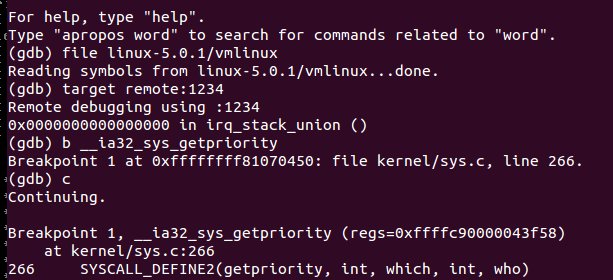

原创作品转载请注明出处 + https://github.com/mengning/linuxkernel/
系统调用是操作系统为用户态进程与硬件设备进行交互提供了一组接口，用户可以利用该组接口使用系统的功能，而不必考虑与本身软件之外的事情。
对于 Linux 系统，系统调用经历了哪些步骤，现在通过 gdb 跟踪代码来分析一下。
首先创建工作目录 mykernel , 在该目录下将Linux-5.0.1内核下载到该目录下，解压；
mkdir mykernel
wget https://kernel.org/pub/kernel/v5.x/linux-5.0.1.tar.gz
tar -zxvf linux-5.0.1.tar.gz
进入 linux-5.0.1 目录下，使用如下命令配置；
// 配置内核
sudo arch/x86/configs/x86_64_defconfig
// 打开内核编译调试
sudo make menuconfig
//kernel hacking ---->
// compile-time checks compiler options ---->
// [*] compile the kernel with debug info
sudo apt-get qemu
git clone https://github.com/mengning/menu.git
查找 Linux-5.0.1/arch/x86/entry/syscalls/syscall_32.tbl , 得到对应系统调用函数如下：
96 i386 getpriority sys_getpriority __ia32_sys_getpriority
修改 menu/test.c , 添加如下所示的功能函数；
int GetPriority(int argc, char *argv[]){
int who;
who = getpid();
int prio = 0;
prio = getpriority(PRIO_USER, who);
printf("current process priority: %d-%d-%d\n",PRIO_USER,who,prio);
return 0;
}
int GetPriorityAsm(int argc, char *argv[]){
int which = PRIO_USER;
int who;
who = getpid();
int prio = 0;
asm volatile(
"movl %0,%%ebx\n\t"
"movl %1,%%ecx\n\t"
"movl $0x60,%%eax\n\t"
"int $0x80\n\t"
"movl %%eax,%2\n\t"
: "+m" (which), "+m" (who), "+m" (prio)
);
printf("current process priority: %d-%d-%d\n",PRIO_USER,who,prio);
return 0;
}
修改 test.c 中的 main , 添加上述两个方法的调用；
MenuConfig("priority","show prioity of process",GetPriority);
MenuConfig("priority-asm","show prioity of process" GetPriorityAsm);
执行 make rootfs 命令，制作根文件系统；
执行menu os ,
sudo ../bin/qemu-system-x86_64 -kernel linux-5.0.1/arch/x86_64/boot/bzImage -initrd rootfs.img
使用如下命令开启menu os ;
sudo ../bin/qemu-system-x86_64 -kernel linux-5.0.1/arch/x86_64/boot/bzImage -initrd rootfs.img -s -S -append nokaslr
新建命令行窗口，在 mykernel 工作目录下，使用 gdb ；
使用 file linux-5.0.1/vmlinux 加载符号表；
使用 target remote:1234 连接 menu，开始调试；
用 b __ia32_sys_getpriority 加载断点 ，然后执行程序。在 menu 中运行 priority 命令，即可执行对应系统调用，且发生中断，如下图所示，可以发现 getpriority 在 kernel/sys.c 中有定义；

接着在 gdb 中逐步执行 n 或 s 命令，跟踪代码的运行情况。可以追踪到 arch/x86/entry/common.c 和 arch/x86/entry/entry_64_compat.S 两个文件，其中 common.c 执行系统调用函数，entry_64_compat.S 中进行用户态和内核态的切换，保存进程上下文和恢复进程上下文的工作；
首先在用户程序执行系统调用函数 getpriority ，然后发生中断，进入 arch/x86/entry/entry_64_compat.S 中的 ENTRY(entry_SYSCALL_compat) 系统调用入口，由用户态进入内核态。然后保存用户堆栈的一些内容，包括当前和用户程序有关的寄存器内容，该部分存放于结构体 pt_regs 中， 具体定义在 arch/x86/include/asm/ptrace.h 中。
struct pt_regs {
unsigned long bx; unsigned long cx;
unsigned long dx; unsigned long si;
unsigned long di; unsigned long bp;
unsigned long ax; unsigned short ds;
unsigned short __dsh; unsigned short es;
unsigned short __esh; unsigned short fs;
unsigned short __fsh; unsigned short gs;
unsigned short __gsh; unsigned long orig_ax;
unsigned long ip; unsigned short cs;
unsigned short __csh; unsigned long flags;
unsigned long sp; unsigned short ss;
unsigned short __ssh; unsigned long r15;
unsigned long r14; unsigned long r13;
unsigned long r12; unsigned long bp;
unsigned long bx; unsigned long r11;
unsigned long r10; unsigned long r9;
unsigned long r8; unsigned long ax;
unsigned long cx; unsigned long dx;
unsigned long si; unsigned long di;
unsigned long orig_ax; unsigned long ip;
unsigned long cs; unsigned long flags;
unsigned long sp;unsigned long ss;
};
接着在该段汇编代码中，保存用户进程相应寄存器的值，包括用户进程数据段指针，首地址，代码段指针及首地址，标志寄存器的值等，此外将一些寄存器值赋值为0；
pushq $__USER32_DS /* pt_regs->ss */
pushq %r8 /* pt_regs->sp */
pushq %r11 /* pt_regs->flags */
pushq $__USER32_CS /* pt_regs->cs */
pushq %rcx /* pt_regs->ip */
GLOBAL(entry_SYSCALL_compat_after_hwframe)
movl %eax, %eax /* discard orig_ax high bits */
pushq %rax /* pt_regs->orig_ax */
pushq %rdi /* pt_regs->di */
pushq %rsi /* pt_regs->si */
xorl %esi, %esi /* nospec si */
pushq %rdx /* pt_regs->dx */
xorl %edx, %edx /* nospec dx */
pushq %rbp /* pt_regs->cx (stashed in bp) */
xorl %ecx, %ecx /* nospec cx */
pushq $-ENOSYS /* pt_regs->ax */
pushq $0 /* pt_regs->r8 = 0 */
xorl %r8d, %r8d /* nospec r8 */
pushq $0 /* pt_regs->r9 = 0 */
xorl %r9d, %r9d /* nospec r9 */
pushq $0 /* pt_regs->r10 = 0 */
xorl %r10d, %r10d /* nospec r10 */
pushq $0 /* pt_regs->r11 = 0 */
xorl %r11d, %r11d /* nospec r11 */
pushq %rbx /* pt_regs->rbx */
xorl %ebx, %ebx /* nospec rbx */
pushq %rbp /* pt_regs->rbp (will be overwritten) */
xorl %ebp, %ebp /* nospec rbp */
pushq $0 /* pt_regs->r12 = 0 */
xorl %r12d, %r12d /* nospec r12 */
pushq $0 /* pt_regs->r13 = 0 */
xorl %r13d, %r13d /* nospec r13 */
pushq $0 /* pt_regs->r14 = 0 */
xorl %r14d, %r14d /* nospec r14 */
pushq $0 /* pt_regs->r15 = 0 */
xorl %r15d, %r15d /* nospec r15 */
保存现场完之后，用 call do_fast_syscall_32 进入 arch/x86/entry/common.c 中的 do_fast_syscall_32 函数，执行系统调用；
在 do_fast_syscall_32 中先做一些准备工作，设置寄存器值，然后进入do_syscall_32_irqs_on(regs) 开始执行系统调用；
根据 regs-> orig_ax 获得系统调用号，查找系统调用表，执行对应函数，结束后返回，关键代码如下：
unsigned int nr = (unsigned int)regs->orig_ax;
regs->ax = ia32_sys_call_table[nr](
(unsigned int)regs->bx, (unsigned int)regs->cx,
(unsigned int)regs->dx, (unsigned int)regs->si,
(unsigned int)regs->di, (unsigned int)regs->bp);
在上述函数执行完成后，最后回到 ENTRY(entry_SYSCALL_compat) 中，恢复现场，并由内核态回到用户态；
STACKLEAK_ERASE
TRACE_IRQS_ON /* User mode traces as IRQs on. */
movq RBX(%rsp), %rbx /* pt_regs->rbx */
movq RBP(%rsp), %rbp /* pt_regs->rbp */
movq EFLAGS(%rsp), %r11 /* pt_regs->flags (in r11) */
movq RIP(%rsp), %rcx /* pt_regs->ip (in rcx) */
addq $RAX, %rsp /* Skip r8-r15 */
popq %rax /* pt_regs->rax */
popq %rdx /* Skip pt_regs->cx */
popq %rdx /* pt_regs->dx */
popq %rsi /* pt_regs->si */
popq %rdi /* pt_regs->di */
movq RSP-ORIG_RAX(%rsp), %rsp
SWITCH_TO_USER_CR3_NOSTACK scratch_reg=%r8 scratch_reg2=%r9
xorl %r8d, %r8d
xorl %r9d, %r9d
xorl %r10d, %r10d
swapgs
系统调用总体流程如下：